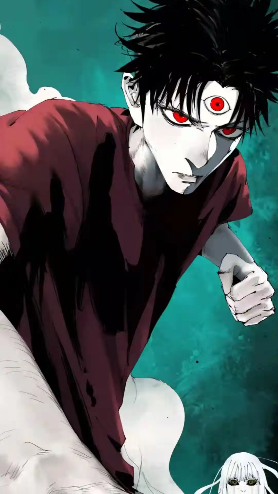
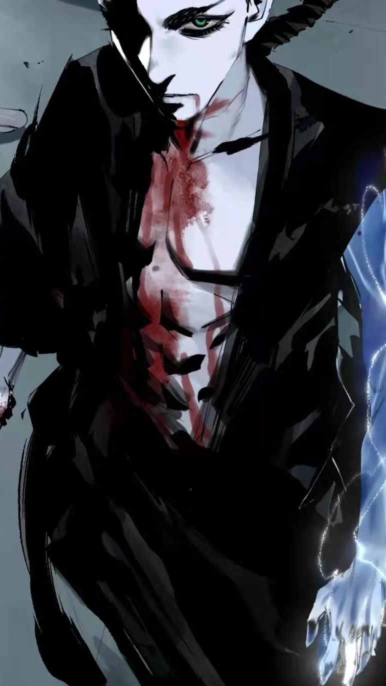
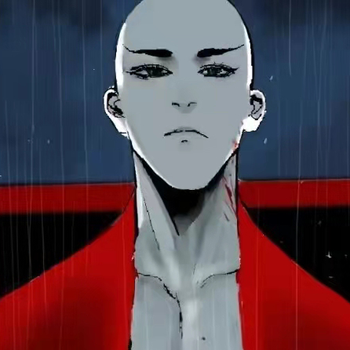
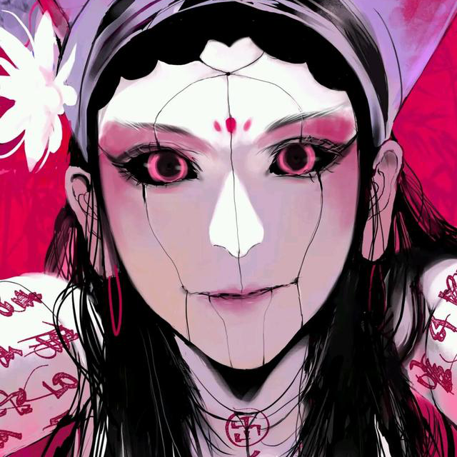

高影
珊瑚太岁
高影。珊瑚太岁选中的‘容器’。在胤霆和太子君然的战斗中，为了保护他，和太岁融为一体，黑化并控制了太岁，用太岁的力量打败了太子，随后失去意识，身体彻底被太岁占据，后和太岁一起被胤霆杀死。
了解更多


王爷
瓜尔佳·胤霆
瓜霆。在父亲死后便继承了“镇南王”一职。后习得萨满秘术，延续生命，是佛爷选中的通天之人。在三百年后和所要刺杀的任务目标————太岁的“容器————”天选之人高影相遇并结识，在大限之日......
了解更多
